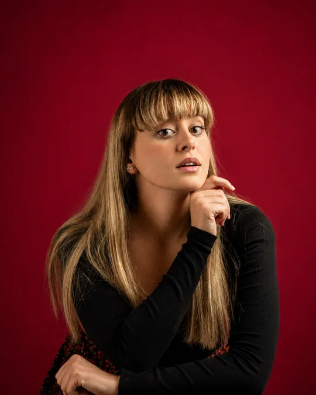
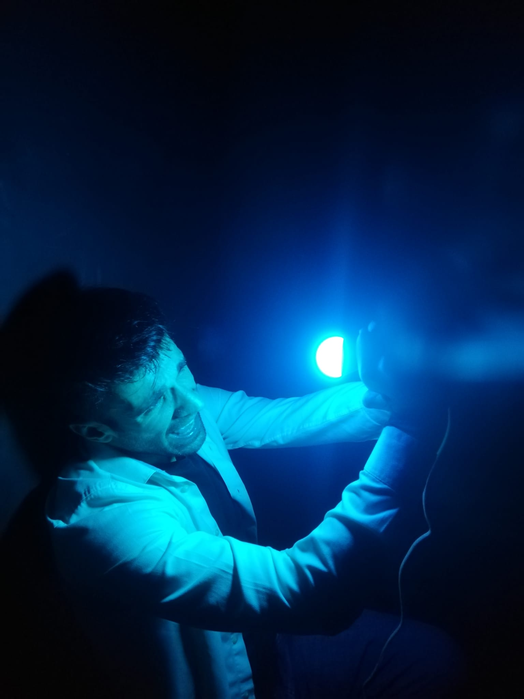

AMORISMO · VOL. I

Yo que creí que con un beso me querías dar tu amor.
Escuchar en SpotifySinopsis
Él cree haber encontrado una posibilidad real de amor; ella descubre demasiado tarde que quizá confundió la intimidad con algo que no estaba dispuesta a sostener. Entre ilusión, amistad y deseo, esta historia mira de frente ese lugar incómodo donde alguien se enamora mientras la otra persona solo intenta no hacer daño.
Confundí que me sentía sola con nuestra amistad en ese momento.
Elenco
Fernando Palacio

Marta Tur
Pablo López
Beatriz Villar
Elenco Valenciano
Omar Ruiz
Carmen Peinado
Galería

Mantente al tanto
Newsletter de Amorismo